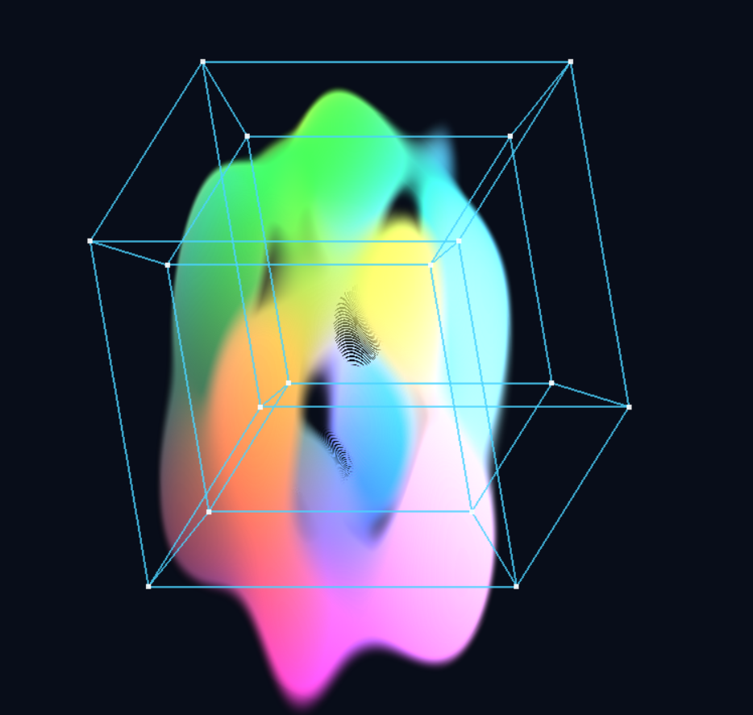

High-dimensional Fields & Shadow Design
Start with 2D shadows of a 3D object, then reconstruct a 4D solid from prescribed 2D or 3D projections. Compare that inverse problem with continuous five-dimensional fields: more dimensions add freedom, but matching views and sustaining an animation are different design goals.
Explore connections
Open the application, then follow what changes
Start with prescribed shadows and ask what higher-dimensional object could produce them. A 4D visual hull makes that inverse problem concrete; separate five-dimensional field explorers use the extra coordinates to create continuously changing, procedural forms.
-
01
Specify the shadows
Choose silhouettes or target volumes and their projection directions.
-
02
Carve the inverse
Intersect the lifted constraints and inspect conflicting projections.
-
03
Move through a slice
Change an extra coordinate to reveal a section of the field.
-
04
Compose continuous forms
Use per-axis generators and interaction terms to compose a looping field, then explore its slices.
Start with the shadow of a familiar-dimensional object
Shadow inversion asks what several 2D silhouettes tell us about a 3D object. Target masks and light placement constrain a bounded solid; moving around that solid exposes information that no single shadow contains. Painted masks become signed distance fields through a separable squared-distance transform.
Fixed-shadow mode carves a candidate volume; a forward check is needed to establish full target coverage. Fixed-shape mode reverses the question with composite shapes, Mandelbulb, Menger and metaballs. Several shadows can compete for the same material: even three orthogonal directions do not guarantee compatible arbitrary targets.
Design the shadows, then recover a four-dimensional solid
Higher-dimensional inversion makes the inverse question concrete. Each prescribed 2D silhouette or 3D target volume constrains a linear orthographic projection of a bounded 4D domain. Intersect their inverse images to obtain the largest candidate hull permitted by the projection masks, then project it forward to check coverage. Rotate the views, change their target shapes, or disable a constraint to see which freedom returns.
The default starts at 32⁴ with three different projections measured from one shaped 4D solid: a torus, a hollow prism and a rounded prism. Since the targets share a known source, the initial reconstruction is feasible on its grid. Change a target shape or rotate a view to explore where independent requests become incompatible; disable a target to release its constraint.
The W slider sits directly below the coverage plot. A W slice shows one 3D cross-section; All W projected superposes occupied cells along the spatial W axis, without treating W as elapsed time. Four color styles help read depth, W coverage or material. The CPU-worker solver supports 16⁴, 24⁴ and 32⁴ grids independently of the WebGPU field viewers.
Change the slice while keeping the field fixed
5D Explorer supplies the simpler higher-dimensional experiment. A coordinate basis maps each visible 3D position into a five-dimensional field; time and a separately controlled W coordinate fill the remaining dimensions. Pause time and move W to watch a different slice appear without moving the camera.
Space, Time, Pair and tilted bases change which field coordinates span the visible view. WebGPU compute integrates the ray-marched volume into a storage texture, while the T–W heatmap provides a second way to inspect the same field. This is sectioning a field, distinct from Shadow inversion’s projection constraints.
Use a statistical decomposition to compose a world
Functional ANOVA separates a multivariable function into individual-axis effects and interactions. Here that structure becomes a construction tool: build the field from per-axis waves, then add products of those waves to create coupling. The interesting reuse is in the spatial and temporal composition; the decomposition itself is established mathematics.
The analytic axis functions are centered over their periods. Before clipping, a pair product can add joint structure while averaging to zero over either participating coordinate. This lets an interaction change how slices fit together without simply adding another one-axis trend. The field controls make that distinction visible as W and time move.
That property belongs to the raw analytic field over independent, complete periods. Positive-density clipping, optical integration, coordinate warps and the optional reaction–diffusion texture can change the rendered marginals. A richer interaction is not a guarantee of constant brightness or a nonempty slice.
- Functional ANOVA: axis effects and interactions become procedural building blocks.
- Distance transforms: painted masks become smooth geometric constraints.
- Visual hulls: intersect projection constraints in a bounded four-dimensional domain.
Ask the same question of a composed field
Compounded 5D Explorer extends the slice-reading experiment with per-axis generators, blending, spatial masks, view walls and curved-space camera controls. Fix the generators while changing the basis to separate a change in composition from a change in how that composition is viewed.
These four entry points separate projection, inversion and sectioning. Shadow inversion asks whether requested views admit a solid. The procedural field modes instead aim to sustain structure as coordinates change. Periodic, similarly treated axes support looping animation; they do not imply strict rotational isotropy or guarantee that every time slice is populated.
Make the mathematical controls practical to explore
Quality controls expose the sampling cost of volume integration. Shadow inversion retains the completed image when nothing changes, including skipping the display resolve; it also limits work to one GPU frame in flight. This removes idle rendering and queued latency without reducing tracing quality. Complex moving scenes still depend on the chosen resolution and ray-marching budget.
Compounded 5D Explorer’s visual aids help identify contributions in a complex composition. Its lighting includes deliberate approximations; procedural creatures and materials are designed field constructions, not simulations of those organisms or substances.
More recorded views · 2
From continuous fields to shadow-constrained design
The earlier five-dimensional project asked how a continuous field could remain coherent while its dimensions and viewing basis changed. Its procedural-field video and arbitrary-slicing diagram capture that original question.
The current family makes those ideas directly explorable in a browser, then extends the project toward shadow-constrained geometry and blended procedural worlds. The earlier write-up remains a development record; its proposed NeRF and Taichi feedback loops are separate from today's implemented capabilities.

Current scope
- Silhouette constraints do not determine a unique interior. The 4D solver finds the maximal hull within its finite grid and bounded domain; a missing active target cell proves incompatibility there, not in every possible continuous discretization.
- A 3D section and a projected shadow lose information differently. The introductory analogy does not make them the same operator or expose every higher-dimensional detail at once.
- Ray marching depends on resolution and step budget. Compounded 5D Explorer’s lightweight density gradient omits some modifiers when computing its lighting normal.
- Shadow inversion, 5D Explorer and Compounded 5D Explorer require WebGPU. Higher-dimensional inversion uses a CPU worker and Canvas 2D, with a finite voxel grid rather than continuous exact geometry.